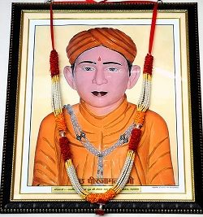
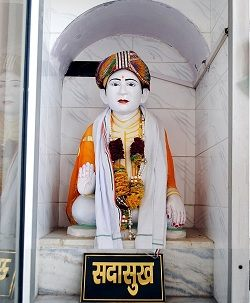
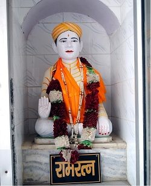
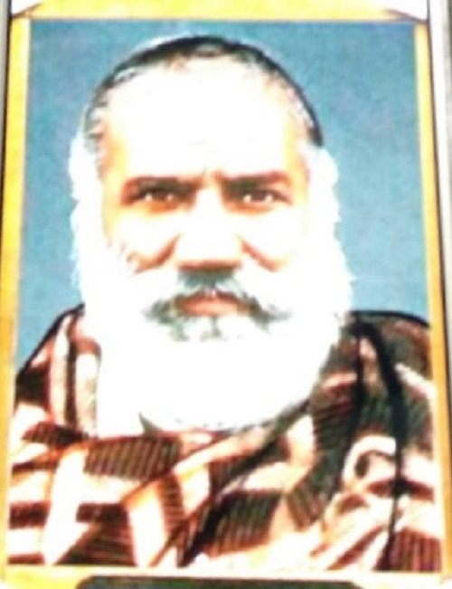

Welcome
Dear Family Members,
We all feel proud of this thing that we are the descendants of Seth Dhirja Mal Garg of Narwana. The purpose of this website is to bring all our family members closer as well as to familiarise all our younger ones to our ancestors and our glorious past.
Notice Board

What a magnificent personality Seth Dhirja Mal was! He was a posthumous child. His father Lala Ghasi
Ram s/o Lala Jai Gopal
left for his heavenly abode leaving his bereaved widow who wanted to suicide. An unknown Sage consoled
her
and told that her son would not only be successful in his life but would be remembered for ages by his
descendants
and the people of Narwana. And it proved true.


Seth Dhirja Mal used all his resources for the benefit of the people of the surrounding areas. He was
known for his sincerity
and generosity. He helped Maharaja Patiala with money and acquired the title of Seth. Maharaja Patiala
gave
big portions of land to him. More than 250 years have passed and now his 12th generation has come but
till
today he is remembered by the people of Narwana as well as by his descendants.
Our ancesters have done countless acts of charity for the people of Narwana. Wells were dug to solve the
problem of drinking
water for the people as well as arrangements were made for the food and water for animals, Ghats were
made
for bathing, a Dharamshala was built for the tired travellers and a temple was also built for one and
all.
To solve the problem of drinking water of nearby areas, 17 acers of land was given to the Government of
Haryana
for a Jalghar.


Seth Patram Garg
Our ancesters donated land as well as money for educational institutions. Seth Patram laid the
foundation of Arya Samaj Narwana
and Arya Kanya Pathshala. These schools have installed big portrait of Seth Patram in their offices. A
vast
locality of Narwana is known as Patram Nagar in honour of Seth Patram. Today also our family members are
engaged in so many charity works.